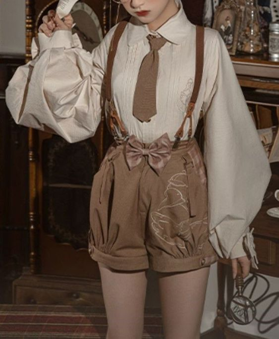

I am from the state of Texas. I am very proud of both my Mexican and American roots. I grew up glued to my computer and playing Sonic the Hedgehog. By the time I got to middle school, I got invested in anime.
I am majoring in Digital Media. I discovrered my fascination of front-end web development by playing video games and being world wide web.
I

I love cute things and the princess aethetic! I love the Jpanese moe subculture. Moe means cute. I am what the western side of the internet calls "cottagecore". I like vintage dresses, bunnies, frilly skirts cabins, you name it!
